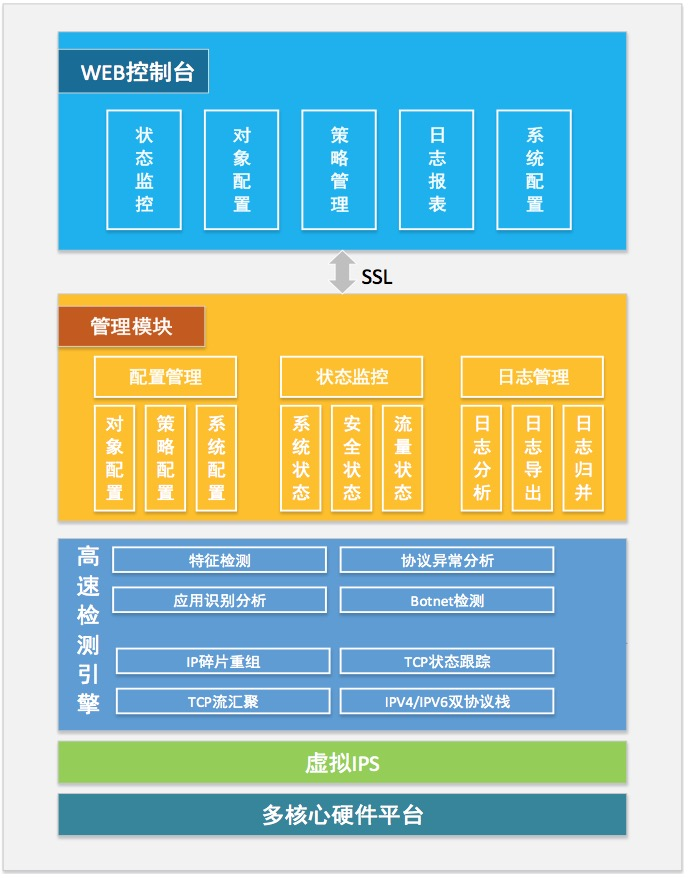

|
入侵检测系统 产品概述 近年来，由于互联网行业的发展，越来越多的软件应运而生，聊天软件、网购平台、云平台、网络游戏等都以惊人的速度增长，新型的攻击也隐藏在这些应用的基础协议之下，使得攻击越来越具有隐蔽性，增加了用户的风险，阻碍了互联网行业的发展。 下一代入侵防御检测系统，提供前所未有的安全等级，同时提供良好的网络接入方式以及客户端防御。采用自主研发的高效引擎封包检测技术，为用户提供高效的网络性能、精准的流量辨识管理、深度入侵防护，保护您的网络免受各种最新的网络攻击。  主要功能 NGIPS主要功能有： 入侵检测及防御 NGIPS采用自主研发的高性能网络安全侦测引擎搭配全面的安全防御特征库，除了检查第四层封包外，更能深入的检查到第七层的内容，以阻挡恶意攻击的穿透及注入，同时不影响正常的程序工作。 异常行为检测与防护 NGIPS提供异常行为检测与防护包括:通讯协议异常检测、IP地址扫描检测、流量统计异常检测、第三/四层DOS/DDOS分散式阻断攻击防御、第七层DOS/DDOS分散式阻断攻击防御、自定义网络异常的的触发参数。 阻挡入侵闪避攻击 高级闪避技术(AET)是黑客利用协议组合的技巧，躲过网络上安全措施的检查，成功抵达目标，实施入侵攻击。 检测及阻挡僵尸网络活动 NGIPS提供业内最完善的僵尸网络（Botnet）/间谍软件特征库。 上网行为管理 NGIPS使用专利技术，为每一种难以辨识的应用程序建立其特有的行为状态模式，只有当“状态”“特征”等多个条件同时触发时，才会被认定为一种特定的应用程序，从而可以大幅度的提高应用程序辨识的准确率。 流量控制及带宽管理 NGIPS可以基于VLAN、源/目的IP、应用协议端口、七层应用软件等进行流量带宽限额管理，支持网络传送带宽控制和总量控制。NGIPS还可以基于软件行为、数据内容等来识别P2P应用，并可针对加密型和非加密型P2P下载进行管理、拦截、限流。 技术特点 NGIPS除了支持上述功能外，还具有以下特点： 超高速的多核心安全引擎 NGIPS搭载最近的安全防护引擎，在进行攻击检测的同时而不影响系统性能，同时具有良好的扩展性，可对未来各种功能进行扩充。 全方位的入侵防御检测 NGIPS具有深度数据包检测引擎，可以准确对比攻击特征，降低误判的发生，为用户网络提供全方位的保护。 软件安全漏洞虚拟修补 一个漏洞被发现后，通常会被很多人恶意利用，而软件厂商在发现漏洞到修复漏洞期间会使得很多用户暴露在这种危险的环境下。公司研发的“虚拟漏洞修复”技术，可以在漏洞发现后立即修复该漏洞，使得用户免受漏洞威胁。 流量监控和带宽管理 NGIPS具备识别应用程序的功能，可以针对特定的主机、应用程序、时间、协议等进行高效的流量管理，避免带宽资源的浪费，确保正常业务的运行 强大的自定义特征规则 提供全面的自定义特征配置界面，可指定3层到7层的比对内容，可以根据数据包内容，触发次数等配置触发条件。 |
 官方微博
官方微博 官方微信
官方微信
 传统企业网信息安全解决方案
传统企业网信息安全解决方案